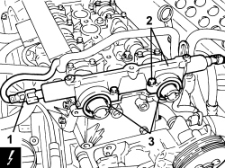

1036C30 CAMSHAFT FRONT OIL SEAL IN CYLINDER HEAD - REPLACEMENT WITH TIMING BELT REMOVED
- Path
- Procedures > 10 ENGINE > 1036 TIMING SYSTEM > 1036C OVERHEAD CAMSHAFTS (2) IN CYLINDER HEAD (1) > 1036C30 CAMSHAFT FRONT OIL SEAL IN CYLINDER HEAD - REPLACEMENT WITH TIMING BELT REMOVED
- Kind
- repair procedure (removal / refitting; the operation number is the code)
- Applies to
- engines: 1.8; all production periods
- Interactive page
- https://sloeber94.github.io/elrnDB-fCrm/en/#/194003022
Applies to: engines: 1.8; all production periods
 Removing
Removing
 Refitting
RefittingOp. 1036C41 PHASE TRANSFORMER ON OVERHEAD CAMSHAFT (ONE) INTAKE EXHAUST ON CYLINDER HEAD - R.R.
Op. 1008B10 POWER UNIT FRONT SUPPORT FLEXIBLE MOUNTING (TIMING SIDE) - REPLACE
Op. 1008A46 POWER UNIT RIGID SUPPORT - TIMING SIDE - R.R.
Op. 1032C10 TIMING SYSTEM MOVING TENSIONER - R.R WITH TIMING BELT/CHAIN REMOVED
Op. 1032D31 PROTECTIVE TIMING INNER COVER - R.R. WITH TIMING BELT REMOVED
1. Disconnect the electrical connections for the electromagnets.
Description | Connector | |
|---|---|---|
1 | Variable valve timing actuator | See N076 PHASE TRANSFORMER ACTUATOR |
2. Unscrew the bolts and remove the camshaft front cap.
3. Remove the two oil seals.

Applies to: engines: 1.8; all production periods
- Remove the residues of sealant from the matching surfaces of the camshaft front cap - cylinder head.
Applies to: engines: 1.8; all production periods
Refitting
Removing- Fit two new oil seals on the camshafts after having lubricated them with engine oil.
- Apply a bead of silicon sealant to the matching surfaces of the camshaft cap.
- Place the camshaft cap in position using the two centering bushes and tighten the bolts to the recommended torque.
Component | Fastening | dia | Value (daNm) | Validity |
|---|---|---|---|---|
Camshaft caps | Bolt | - | 0.8 | 1.8 |
Op. 1032D31 PROTECTIVE TIMING INNER COVER - R.R. WITH TIMING BELT REMOVED
Op. 1032C10 TIMING SYSTEM MOVING TENSIONER - R.R WITH TIMING BELT/CHAIN REMOVED
Op. 1008A46 POWER UNIT RIGID SUPPORT - TIMING SIDE - R.R.
Op. 1008B10 POWER UNIT FRONT SUPPORT FLEXIBLE MOUNTING (TIMING SIDE) - REPLACE
Op. 1036C41 PHASE TRANSFORMER ON OVERHEAD CAMSHAFT (ONE) INTAKE EXHAUST ON CYLINDER HEAD - R.R.
Topics linked from this page (5)
- 1008A46 POWER UNIT RIGID SUPPORT - TIMING SIDE - R.R.
- 1008B10 POWER UNIT FRONT SUPPORT FLEXIBLE MOUNTING (TIMING SIDE) - REPLACE
- 1032C10 TIMING SYSTEM MOVING TENSIONER - R.R WITH TIMING BELT/CHAIN REMOVED
- 1032D31 PROTECTIVE TIMING INNER COVER - R.R. WITH TIMING BELT REMOVED
- 1036C41 PHASE TRANSFORMER ON OVERHEAD CAMSHAFT (ONE) INTAKE EXHAUST ON CYLINDER HEAD - R.R.